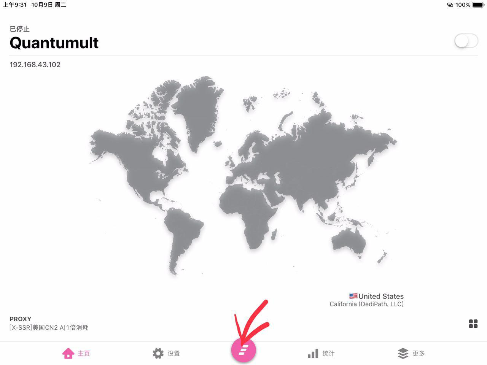

Quantumult
简介
界面优美，功能强大，支持订阅。它支持众多协议，如 $$(R)、VMess 等。略微高端，适合高手使用。
Apple Store: https://itunes.apple.com/us/app/quantumult/id1252015438?mt=8
使用
首先请先使用美区账号购买这个app
接下来请打开控制面板的节点列表，获取Quantumult订阅链接
然后请打开app，切换到设置页面
点击进入订阅栏目
点击加号添加一个服务器订阅
然后请把订阅链接粘贴到链接框
然后在名称里面随便填点东西，然后保存
这样子就添加成功了
然后左划我们新添加的服务器，点击更新按钮
正常来说是可以成功更新的
正常来说是可以成功更新的请回到主页，点击下面的小圆圈。
选择您想要连接的节点。
最后，打开右上角的开关就可以啦！如果您是第一次使用，请务必同意系统弹出来的提示。